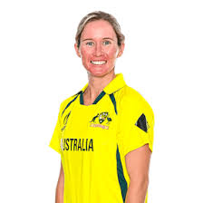
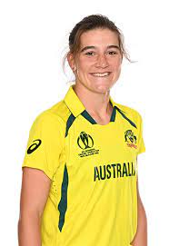

BATTERS
Sophia Dunkley Sabbhineni Meghana
BOWLERS
Monica Patel Parunika Sisodia Shabnam Shakil
WICKET KEEPER
Beth Mooney Sushma Verma
ALL ROUNDERS
Ashleigh Gardner Georgia Wareham Sneh Rana Annabel Sutherland
Deandra Dottin Tanuja Kanwar Harleen Deol Dayalan Hemalatha
Mansi Joshi Ashwani Kumari Hurley Gala